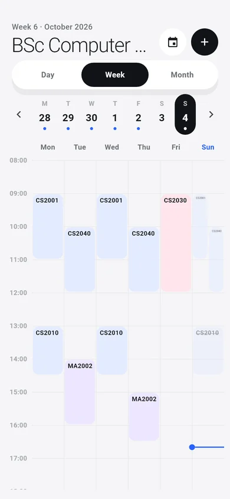
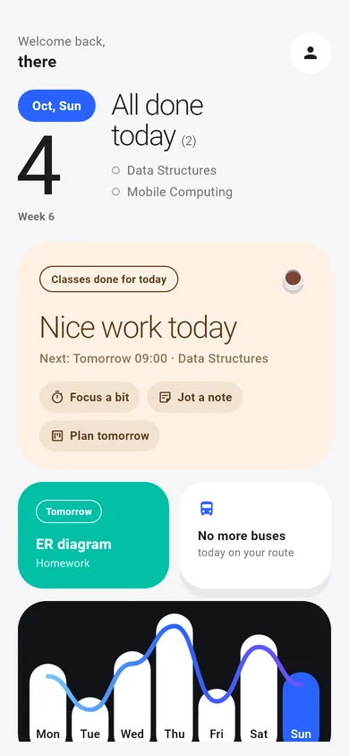
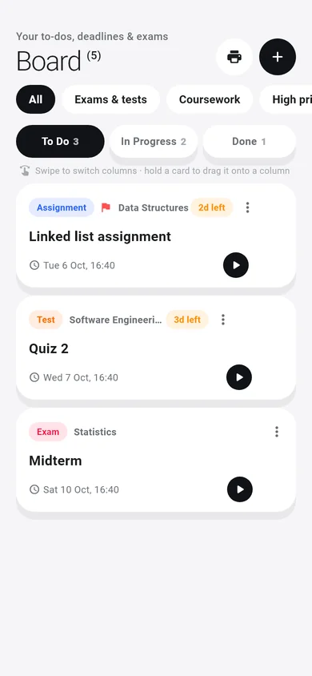

Snap your timetable, done.
Import your timetable from a photo or PDF with AI. Week-aware classes, one-off sessions, and Day, Week and Month views with a live “now” line.
- Photo / PDF import
- Week 1–15 aware
- Meet · Teams · Zoom links
Timetable, deadlines, bus times, module files, a focus timer and your cohort's group chat — built for University of Mauritius students. On your phone and your PC, always in sync.
Free · Works offline · v3.1



Features
From the first lecture of Week 1 to the last deadline before exams.
Import your timetable from a photo or PDF with AI. Week-aware classes, one-off sessions, and Day, Week and Month views with a live “now” line.
Cross out that one class. Reminders, “next class” and the widget skip it — on every device.
Opens on the next departure with a live countdown. Share routes with friends as a code over WhatsApp.
To Do → In Progress → Done. Priorities, filters and time spent per task. Every delete has Undo.
Pomodoro with a daily goal, streaks and a weekly chart. Link a session to a task.
Join your group by programme, year (Y1–Y5) and semester (S1/S2), or with a private code. Leaders manage a shared timetable and events, there's a group chat with announcements, and a weekly focus leaderboard to keep everyone honest.
A folder per module plus your own sections. Built-in PDF viewer, search, move and rename.
Task reports as PDF and printable planners: lined, dotted, grid, month and week sheets.
One account, live sync. Works offline and catches up later. Start as a guest, upgrade anytime.
Colourful notes with headings, bold, bullet lists and tickable checklists. Pin the ones that matter.
A day on campus
Your route opens on the next departure — earlier buses fold away.
Reminder 10 min before, homework attached, one tap to join the Teams link.
Lecturer cancelled — crossed out for you and skipped by reminders.
Linked to “ER diagram”. Your cohort's leaderboard just moved.
On your home screen, your board and the 14-day “coming up” strip.
Screens
Download
Latest release: v3.1
APK
ZIP
uom_per_app.exe — keep the other files next to it.iPhone and Mac aren't available yet. All releases →
FAQ
No. UOM Per is an independent student-made app. It isn't affiliated with or endorsed by the University of Mauritius.
No — it's free to download and use on Android and Windows.
You can start as a guest. Create an email account later — without losing anything — to sync between your phone and PC and to join groups.
Yes. Everything is stored on your device first and syncs when you're back online.
The app is distributed directly instead of through the Play Store or Microsoft Store, and the Windows build isn't code-signed yet. Allow “Install unknown apps” on Android, or choose More info → Run anyway on Windows.
Not yet. Android and Windows are supported today.